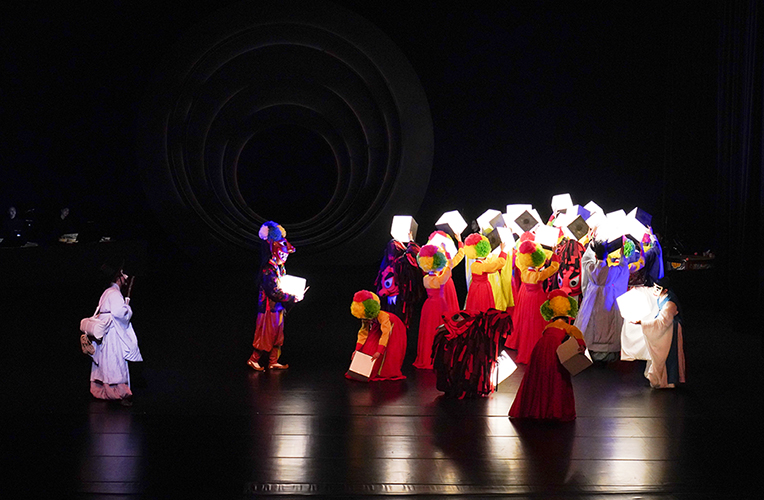
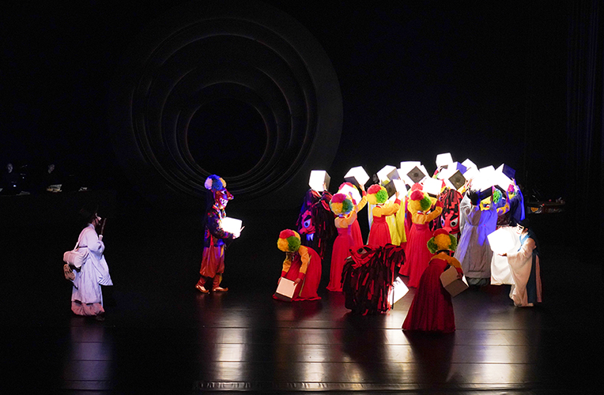
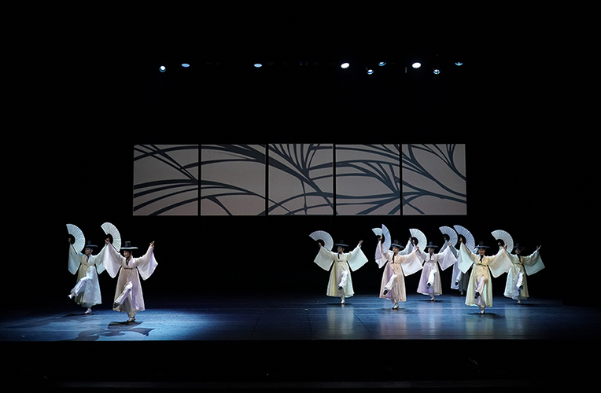
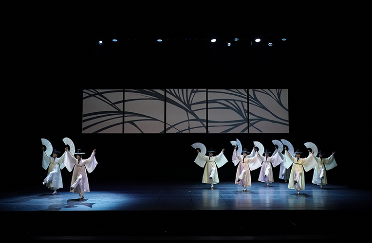

Yeongnam Dance Festival <We Want Dance>
- Time
- 7.14.(Fri)~ 8.12.(Sat) Weekdays 19:30 Weekends 17:00
- Venue
- Yeonak-dang Hall and Yeji-dang Hall
- Ticket Price
- Yeonak-dang Hall_S seat 20,000won A seat 10,000won Yeji-dang Hall_All seats 10,000won
- Cast/Direct
- Busan National Gugak Center Traditional Music Orchestra Invited and Selected Artists and Groups
- Audience Age
- Children in elementary school or older
A harmonious festival enjoying dances and communicating together!
Yeongnam Dace Festival is a big bowl containing all the Korean dances in the past, present, and future. A diverse kind of dances are listed in the program not only the special project celebrating the record of Mask Dance in UNESCO World Cultural Heritage, but also historical project commemorating 60’s anniversary of Busan Dance Society. The Festival prepares traditional and modern dance, so that the audience can meet and communicate with elderly and young artists, regardless of generation or genres.
Program
Opening Concert ‘Yaryu byeolgok_the village living in lunar time’ National·metropolitan Organization Closing Concert Invited performers with traditional and creative dance based on mask dance Special Program ‘Artists cultivated the field of dance’ Stage from the Contest ‘Korean Traditional Dance Party’ All unique stage ‘Creative Dance Party’ Yeongnam Dance fringe ‘Yeongnam mask dance battle’ Let’s experience the traditional movement ‘Workshop’
 



 
